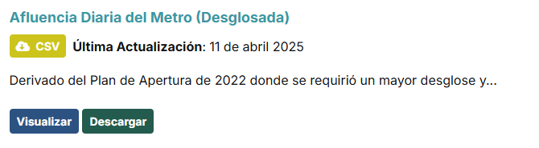
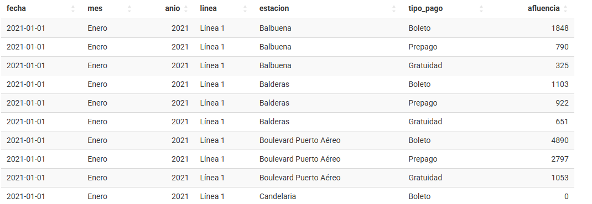
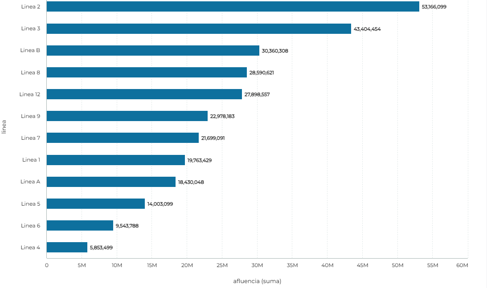

EL ROBO Y LA INSEGURIDAD EN EL METRO DE LA CDMX
UN PROBLEMA QUE AFECTA A MILES DE USUARIOS
UNRC
UNIVERSIDAD NACIONAL ROSARIO CASTELLANOS
Ángel Jesús Segura Díaz - Enique Hernandez Loredo - Omar Franco Joaquin
UN PROBLEMA QUE AFECTA A MILES DE USUARIOS
Ángel Jesús Segura Díaz - Enique Hernandez Loredo - Omar Franco Joaquin
En esta sección encontrarás las últimas entradas de nuestro blog, donde abordamos temas relacionados con la seguridad en el metro de la CDMX y consejos para protegerte.


El metro de la CDMX es uno de los más transitados del mundo y es operado por el Sistema de Transporte Colectivo (STC). Tiene 12 líneas recorriendo la ciudad y la red de metro conecta con otros medios de transporte público de la ciudad como el Metrobús, el Tren Ligero, el Mexibús o el Ferrocarril Suburbano.
El robo en el metro de la Ciudad de México es un problema persistente que afecta a miles de usuarios a diario. Aunque las autoridades intentan implementar medidas para combatir esta inseguridad, los incidentes continúan ocurriendo con frecuencia, especialmente en horas pico.
Los ladrones aprovechan la aglomeración de personas, la falta de vigilancia en algunas estaciones y los momentos de distracción de los pasajeros para cometer estos delitos. A menudo, los robos son perpetrados sin que las víctimas se den cuenta hasta después de que el agresor ha desaparecido.
"Me robaron el teléfono en la línea 2, ni me di cuenta hasta que ya había desaparecido. Es horrible, pero no sabía a quién recurrir" - Juan P.
"Lo peor es que no ves a los ladrones, a veces parecen pasajeros normales. Hay que tener más cuidado." - Laura G.
"Me querian dar un pinchazo pero me di cuenta a tiempo, gracias a Dios." - Francisco R.
Además de estar alertas, es importante recordar que la seguridad depende de la cooperación de todos. Si ves algo sospechoso, no dudes en alertar a la policía o al personal de seguridad del metro. A través de la denuncia se puede mejorar la seguridad y prevenir más incidentes.

Nosotros hicimos una investigacion , recopilamos datos, los limpiamos los analisamos y vizualizamos para poder sacar algunas conlusiones de esos datos.
Usamos un dataset que encontramos en la pagina de datos abiertos de la cdmx, el cual contenia una recopilacion de las estaciones que eran las mas concurridas del metro de la cdmx
En este data set podemos observar los siguinetes datos:
En la grafica podemos observar que a medida que van avanzando los años, la afluencia en el metro va incrementando gradualmente , se notan algunas bajas y posteriormente unas altas en la afluencia.
Podemos notar el incremento que hubo desde 2021 a 2025 en la afluencia de perosnas que usan el transporte colectivo metro, empezando con un total de "41,033,642" en 2021 y terminando con un total de "104,863,384" en 2025."
Notamos una alta en la fluencia en "2024-11" con un total de "109,754,838" y una baja en "2025-03" con un total de "104,863,384" personas que usan el metro
Descripción general del gráfico: Es una gráfica de barras horizontales que muestra la afluencia total (suma) por línea del metro de la Ciudad de México entre el 1 de enero de 2025 y el 31 de marzo de 2025, según datos de la Secretaría de Movilidad (SEMOVI).
Ejes y variables:
Principales hallazgos (de mayor a menor afluencia):
Lo que significa esto: Las líneas con mayor afluencia (2, 3 y B) son las más utilizadas por la población, probablemente por cubrir zonas densamente pobladas o ser interconectores clave. Las líneas con menor afluencia podrían tener menor longitud, menos estaciones, estar parcialmente en reparación o no ser tan estratégicas en la red. La información está filtrada para un periodo bastante corto, lo que da una visión reciente del uso del sistema